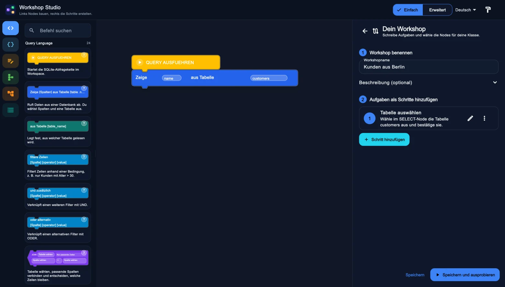

macOS
ZIPArchiv entpacken und die Workshop-Admin-App öffnen.
macOS herunterladenErstelle geführte SQLite-Workshops, probiere sie selbst aus und teile sie mit deiner Klasse.

Sobald ein Release veröffentlicht ist, findest du hier die Pakete für dein Betriebssystem.
Archiv entpacken und die Workshop-Admin-App öffnen.
macOS herunterladenArchiv entpacken und die EXE im entpackten Ordner starten.
Windows herunterladenArchiv entpacken und das Programm im Ordner bundle starten.
Der Beispielworkshop verwendet die mitgelieferten Übungsdaten mit Albrecht, Gertrud und Ottilie.
PDF · 19 Seiten
Leitfaden für Lehrkräfte mit Screenshots, Prüfungen, Freigabe und einer Planung für zwei Schulstunden.
Leitfaden öffnenPDF · 27 Seiten
Folien zum Projizieren, Arbeitsblätter und Musterlösungen zu SELECT, Filtern, Sortierung, JOIN und COUNT.
Unterrichtsmaterial öffnenVeröffentlichte Versionen und ihre Versionshinweise erscheinen hier.